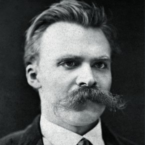

Fryderyk Niezstchne: zgładzić smoka
07.10.2020 | Mikołaj Sypuła | 22:35:00
Młodość i studia
Był synem luterańskiego pastora Carla Ludwiga Nietzschego (1813–1849) i Franziski Nietzsche, z domu Oehler (1826–1897). Wychowywał się w rodzinie o tradycjach protestanckiej religijności szwabskiej, którą cechowało zamknięcie w ramach indywidualistycznej interpretacji Biblii. Zdaniem niektórych interpretatorów (np. Jaspersa) właśnie protestancka religijność wpłynęła na ukształtowanie pojęcia moralności niewolniczej, analizowanej później przez Nietzschego. Nietzsche przyznawał się wielokrotnie do polskiego pochodzenia. Badania drzewa genealogicznego niemieckiego filozofa (prowadzone przez Maxa Oehlera – kuratora Archiwum Nietzschego w Weimarze), które sięgają XVI wieku wskazują, że miał jedynie niemieckich przodków. Nietzsche chętnie przyznawał się do „polskości”, ponieważ był to rodzaj manifestacji przeciwko Niemcom i ich kulturze, którą uważał za upadłą. Polskie pochodzenie filozofa poruszył w artykule „Ueber Nietzches Polentum” Bernard Scharlitt, wywodząc ten ród od Nickich herbu Radwan z województwa płockiego. Od śmierci ojca w 1849 roku domem Nietzschego zarządzały kobiety: babka, ciotki, młoda jeszcze matka i siostra Elżbieta; w 1850 roku cała rodzina przeniosła się do Naumburga (Saale), gdzie Nietzsche rozpoczął naukę w szkole miejskiej, którą kontynuował w gimnazjum przykatedralnym. W tym czasie samodzielnie zapoznał się z klasyczną muzyką niemiecką – dziełami Bacha, Händla, Mozarta, Haydna, Beethovena i Schuberta. Po ukończeniu gimnazjum zaproponowano mu bezpłatne kontynuowanie edukacji w Pforcie, gdzie odkrył poezję zupełnie nieznanego w tym czasie w Niemczech Hölderlina i uznał jego wielkość. Zobacz też: Dom Friedricha Nietzschego. W październiku 1864 Nietzsche zapisał się na Uniwersytet w Bonn. Podjął tam studia w zakresie filologii klasycznej, teologii, historii Kościoła i sztuki. Zapoznał się wtedy z książką Davida Straussa Das Leben Jesu. Kritisch bearbeitet (1835), która poddawała Biblię analizie filologicznej, wskazując zdaniem autora na jej mityczne podłoże oraz zawarte w jej księgach bardzo liczne sprzeczności w opisie zdarzeń (w tym wielu cudów)[b]. Pod wpływem tej książki Nietzsche stracił wiarę[4]. Po dwóch semestrach przeniósł się na Uniwersytet w Lipsku, gdzie jeszcze jako student stał się uznanym filologiem klasycznym i współtworzył publiczne towarzystwo filologiczne. W 1866 ukazały się drukiem jego pierwsze publikacje – rozważania o poezji Teognisa z Megary i komentarze do Arystotelesa. Rok 1867 był jednym z przełomowych w życiu Nietzschego. Zapoznał się wtedy z filozofią Arthura Schopenhauera zawartą w dziele Świat jako wola i przedstawienie. Schopenhauerowska analiza moralności, jednostki wybitnej, znaczenia sztuki w życiu człowieka pobrzmiewa echem w całym dziele Nietzschego, nawet gdy doszedł już do wniosku, że Schopenhauer się mylił i występował przeciw jego filozofii. Dzięki Schopenhauerowi Nietzsche zbliżył się też do Richarda Wagnera. Bazylea Młody Nietzsche w mundurze pruskim Po odbyciu obowiązkowej służby wojskowej, dzięki zabiegom nauczyciela i przyjaciela Fryderyka Ritschla, któremu zawdzięczał też wcześniejsze publikacje, Nietzschemu zaoferowano profesurę nadzwyczajną na katedrze filologii klasycznej uniwersytetu w Bazylei. Oficjalne powołanie nastąpiło w lutym 1869, na podstawie już opublikowanych prac, jeszcze przed doktoratem, bez egzaminów i formalności habilitacyjnych. Nietzsche miał wtedy niecałe 25 lat. 28 maja 1869 wygłosił swój pierwszy wykład: Homer i filologia klasyczna. Była to błyskotliwa kariera, jednak Nietzsche czuł już, że jego przeznaczeniem jest filozofia. W 1872 roku ukazała się książka Narodziny tragedii, czyli hellenizm i pesymizm, w której wyłożył swe koncepcje dionizyjskości i apollińskości. Książka przeszła bez echa, jeśli nie liczyć paru jawnie negatywnych recenzji, których efektem była utrata zaufania studentów do Nietzschego jako filologa. Mimo talentu wykładowcy (potwierdzonego we wspomnieniach), w semestrze 1872/1873 na jego wykłady uczęszczało zaledwie dwóch słuchaczy. Jedyne wsparcie przyszło ze strony Richarda Wagnera[5]. W Bazylei zawiązał też Nietzsche przyjaźń z młodszym od siebie o pięć lat Paulem Rée – wywarła ona pewien wpływ na jego twórczość i znacznie większy na życie osobiste. W Bazylei, w wieku 25 lat, Nietzsche złożył podanie o anulowanie obywatelstwa pruskiego. Oficjalną odpowiedź otrzymał w dokumencie z dnia 17 kwietnia 1869 roku, tak skomentowanym przez Curta Paula Janza: Od tego dnia Nietzsche, zgodnie z prawem konstytucyjnym, nie był już ani Prusakiem, ani Niemcem, lecz [...] pozostawał bez państwa, albo – według bardzo pasującego do Nietzschego będącego wówczas w użyciu terminu szwajcarskiego -- „bez ojczyzny”, i takim pozostał [...] Stał się i pozostał Europejczykiem[6]. Richard Wagner Nietzsche poznał Wagnera jeszcze w Lipsku, w roku 1868, we wczesnym okresie swojej fascynacji muzyką kompozytora. Połączyła ich właśnie miłość do muzyki i zainteresowanie filozofią Schopenhauera. Wagner był poruszony przeciwstawieniem apollińskość-dionizyjskość, swoje opinie wyraził w liście do Nietzschego. Lata 1873–1876 to okres silnego zbliżenia z Wagnerem. Nietzsche był stałym gościem u Wagnerów w Triebschen, a po ich przeprowadzce również w Bayreuth. Mógł przyglądać się z bliska życiu wielkiego kompozytora i analizować motywy jego postępowania, a te uznał za dalekie od ideałów chrześcijańskich. Wagner stanowił w oczach Nietzschego dowód, że wielkie dzieło często idzie w parze z „niskimi” pobudkami twórcy – samolubstwem, zawiścią, pragnieniem sławy, zadufaniem w sobie, autorytaryzmem i małostkowością. Między innymi te cechy Wagnera, oprócz późniejszej jego sympatii dla nacjonalizmu i chrześcijaństwa oraz panującego w otoczeniu artysty antysemityzmu, doprowadziły do rozstania Nietzschego z kompozytorem pod koniec 1876 roku. Lecz w roku 1873 Nietzsche był jeszcze pod wpływem Wagnera – reformatora muzyki i koncentrował się na krytyce współczesnej sobie kultury. Po zwycięstwie nad Francją w 1870 roku i utworzeniu w 1871 Cesarstwa Niemieckiego, Niemcy ogarnęła narodowa euforia. Nietzsche stanowczo przeciwstawiał się powszechnemu przekonaniu o rzekomym zwycięstwie „wyższej” kultury niemieckiej nad „niższą” francuską, konstatując jednocześnie symptomy powszechnego upadku sił duchowych kultury zachodniej. W swych późniejszych dziełach określał tę sytuację mianem nihilizmu; na razie ograniczał się do wskazywania na negatywne dla kultury zjawiska: postępującą specjalizację w nauce, wzrost znaczenia prasy jako środka komunikacji społecznej i schematyczność systemu edukacji. Efektem tych zjawisk społecznych był wykształcony filister – odpowiednik dzisiejszego „konsumenta kultury”. Zarysowane tu problemy Nietzsche przedstawił dokładniej w Niewczesnych rozważaniach, które powstały w latach 1873–1874. Współcześni interpretatorzy wskazują na aktualność tych zagadnień. Ludzkie, Arcyludzkie Zerwanie z Wagnerem miało jednak głębsze podłoże niż niezgodność poglądów, było wynikiem przemian, jakie zachodziły w samym Nietzschem. W lipcu 1876, jeszcze w czasie poprawnych stosunków z Wagnerem, Nietzsche napisał pierwsze zdania dzieła Ludzkie, Arcyludzkie, w którym wstępnie zarysował niektóre koncepcje, rozwijane następnie w późniejszych pracach – krytyka teorii poznania, języka i chrześcijaństwa. Ludzkie, Arcyludzkie jest też pierwszym dziełem, w którym Nietzsche wypróbował formę aforyzmu. Wszystkie jego książki napisane po 1878 roku mają postać zbioru luźnych, choć pogrupowanych tematycznie, krótkich ustępów, czy wręcz pojedynczych zdań. Było to z jednej strony wynikiem poszukiwań najbardziej odpowiedniej dla wyrażenia myśli formy literackiej, a z drugiej koniecznością – w tym właśnie okresie nasiliły się objawy choroby, na którą Nietzsche cierpiał właściwie od wczesnej młodości. Choroba Pierwsze bóle głowy wystąpiły u Nietzschego w 1856 roku, przybierając w późniejszym okresie formy nawet kilkudniowych ataków migreny, połączonych z wymiotami i bólem oczu, co groziło mu ślepotą. Próby kuracji nie dawały rezultatu, Nietzsche uznał zresztą, że sam będzie dla siebie najlepszym lekarzem. Podawano wiele przyczyn wyjaśniających podłoże choroby: od obciążenia dziedzicznego (ojciec Nietzschego zmarł na guza mózgu), po zarażenie syfilisem, jednak żadne z nich nie zyskało powszechnej akceptacji. W 1876 roku Nietzsche zmuszony był prosić na uniwersytecie o urlop zdrowotny, a w 1879 roku, już po ukazaniu się książki Ludzkie, Arcyludzkie, ostatecznie zrezygnował z profesury. Jako byłemu profesorowi bazylejczycy przyznali mu rentę, co pozwalało na skromne, lecz niezależne życie. W 1889 roku, po totalnej katastrofie psychicznej w Turynie, choroba Nietzschego została zdiagnozowana jako paralysis progressiva (trzeciorzędny syfilis). Mimo braku jakiegokolwiek klinicznego dowodu (pierwszy i niespecyficzny test Wassermana pojawił się w 6 lat po śmierci Nietzschego) diagnoza ta, powtarzana w różnych biografiach, przetrwała przeszło stulecie. Eva Cybulska podważyła tę tezę w 1996 na konferencji nietzscheańskiej w Manchesterze, proponując w zamian diagnozę zespołu maniakalno-depresyjnego z waskularną demencją[7].
